Catalogue des sorts (Iron's)
Les parchemins en jeu affichent les valeurs de base (puissance 1, sans réduction de recharge). Avec ton équipement, les dégâts sont plus élevés et la recharge plus courte.
Voici les sorts d'Iron's Spells 'n Spellbooks avec les réglages de ce pack : école, niveau maximum, multiplicateur de puissance et recharge. Un multiplicateur de puissance bas (×0,2–0,3) signifie que le sort dépend beaucoup de ta puissance de sorts ; ×1 est le réglage normal du mod.
École : Feu
| Sort | Rareté min. | Niv. max | Puiss. × | Mana | Incant. | Recharge |
|---|---|---|---|---|---|---|
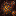 Tempête de blazes (Blaze Storm)Hold to unleash a barrage of blaze fireballs, shooting rapidly but wildly in front of you and igniting any creatures or blocks hit. | Commun | 10 | 0.3 | 5+1/niv. | canalisé | 20.0 s |
Quickly launch yourself forward in a haze of fire, searing creatures you pass through while in a blaze. | Commun | 10 | 0.01 | 20+2/niv. | instant | 10.0 s |
| Souffle de feu (Fire Breath) Hold to spew a cone of fire outwards, igniting creatures and blocks in its path. | Commun | 10 | 0.3 | 5+1/niv. | canalisé | 12.0 s |
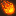 Boule de feu (Fireball)Manifest and throw a ball of fire, exploding and dealing massive damage on impact. | Épique | 3 | 0.008 | 60+15/niv. | 2 s | 25.0 s |
Shoot a small projectile of fire, igniting whatever it hits. | Commun | 10 | 0.3 | 10+2/niv. | instant | 1.0 s |
| Barrage enflammé (Flaming Barrage) Cast to select targets, which at the end of recasting, will each be under barrage of small fireballs. | Rare | 5 | 1.0 | 80+5/niv. | instant | 15.0 s |
Emanate a surge of fiery magic, igniting and rending creatures in a radius around you. Rended creatures have reduced armor. | Commun | 8 | 1.0 | 50+8/niv. | 1 s | 45.0 s |
| Bombe de magma (Magma Bomb) Launch a bomb made from magma, exploding on impact and leaving a field of fire where it lands | Peu commun | 8 | 0.3 | 30+5/niv. | 1 s | 12.0 s |
| Brûlure (Scorch) In a targeted area, erupt a scorch of fiery magic, damaging creatures in the zone and leaving a field of fire. | Peu commun | 10 | 1.0 | 50+5/niv. | 1 s | 12.0 s |
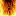 Mur de feu (Wall of Fire)Recast to place anchor points, which erupts into a wall of fire when the cast finishes, or when the maximum length is reached. This wall blocks projectiles and ignites creatures that pass through it. | Commun | 5 | 0.3 | 30+5/niv. | instant | 20.0 s |
École : Glace
| Sort | Rareté min. | Niv. max | Puiss. × | Mana | Incant. | Recharge |
|---|---|---|---|---|---|---|
| Cône de froid (Cone of Cold) Hold to cast out a cone of cold energy, freezing creatures in its path. | Commun | 10 | 0.3 | 5+1/niv. | canalisé | 12.0 s |
| Pas de givre (Frost Step) Instantaneously teleport to where you are looking, leaving behind a shadow of ice. This shadow will shatter after 3 seconds or upon taking any damage, shooting out icicles in every direction. | Rare | 8 | 0.01 | 15+3/niv. | instant | 10.0 s |
| Gelure (Frostbite) | Commun | 5 | 0.3 | 100+50/niv. | 2 s | 0.0 s |
| Vague de givre (Frostwave) Cascade a wave of frost magic in a radius around you, afflicting creatures with chilled. Chilled creatures are slowed, and have their incoming freeze time doubled. | Commun | 8 | 0.3 | 50+5/niv. | 1 s | 45.0 s |
| Bloc de glace (Ice Block) Conjure a giant chunk of ice above a targeted creature or block. After a short delay, it will fall down and explode for area frost damage, doing additional damage to any creatures hit on the way down. | Rare | 6 | 0.2 | 40+10/niv. | 1,5 s | 15.0 s |
| Stalactite de glace (Icicle) Fire a piercing bolt of cold energy in the form of an icicle, freezing those it touches. | Commun | 10 | 0.3 | 10+2/niv. | instant | 1.0 s |
| Rayon de givre (Ray of Frost) Fire a beam of cold energy, dealing low damage but immediately applying freeze to the creature hit. | Commun | 5 | 0.3 | 25+15/niv. | instant | 15.0 s |
| Invocation d'ours polaire (Summon Polar Bear) Cast to summon a polar bear who will follow, protect, and fight for you, as well as providing a mount. | Rare | 10 | 0.3 | 50+10/niv. | 1 s | 180.0 s |
École : Foudre
| Sort | Rareté min. | Niv. max | Puiss. × | Mana | Incant. | Recharge |
|---|---|---|---|---|---|---|
| Ascension Cast to strike lightning at your feet and ascend quickly into the air, and gain reduced gravity for the next few seconds. | Rare | 10 | 0.3 | 50+1/niv. | instant | 15.0 s |
| Foudre en boule (Ball Lightning) Conjure an orb of lightning that slowly moves forward, damaging creatures it phases through and bouncing off blocks. | Commun | 10 | 1.0 | 20+4/niv. | instant | 1.0 s |
| Chaîne d'éclairs (Chain Lightning) Start a chain of lightning from a targeted creature, causing waves of zapping magic to cascade to nearby creatures | Peu commun | 10 | 0.5 | 25+7/niv. | instant | 20.0 s |
| Charge Imbue yourself with the power of lightning, increasing your speed and combat abilities. | Rare | 3 | 0.3 | 50+25/niv. | instant | 40.0 s |
| Électrocution (Electrocute) Hold to manifest a cone of electrical energy, damaging creatures in its path. | Commun | 10 | 0.3 | 3+1/niv. | canalisé | 12.0 s |
| Éclair (Lightning Bolt) Down from the heavens, summon a bolt of lightning. | Épique | 10 | 0.3 | 75+15/niv. | instant | 25.0 s |
| Lance de foudre (Lightning Lance) Hold to charge a spear made of lightning. Release to throw it like a javelin, dealing high damage to the creature it hits. | Peu commun | 10 | 0.5 | 50+10/niv. | 2 s | 8.0 s |
| Onde de choc (Shockwave) Coalesce a surge of electrical power, and unleash it in a devastating shockwave, blasting exposed creatures. | Commun | 8 | 1.0 | 70+5/niv. | 0,8 s | 30.0 s |
| Pas du tonnerre (Thunderstep) Teleport a short distance forward, creating a wake of lightning that damages creatures you teleport through. | Peu commun | 5 | 0.01 | 75+15/niv. | instant | 8.0 s |
| Orage (Thunderstorm) Cast to conjure a thunderstorm centered around yourself, which strikes nearby creatures within sight with a small bolt of lightning every 2 seconds for the spell's duration. | Rare | 8 | 1.0 | 70+10/niv. | 2 s | 120.0 s |
École : Sacré
| Sort | Rareté min. | Niv. max | Puiss. × | Mana | Incant. | Recharge |
|---|---|---|---|---|---|---|
| Aile d'ange (Angel Wings) Cast to gain wings made of holy energy, acting as an elytra, for a brief period of time. | Épique | 5 | 0.3 | 60+20/niv. | instant | 120.0 s |
| Bénédiction de vie (Blessing of Life) Cast to target any creature, showing a glowing outline. Completing the cast will heal this creature. | Commun | 10 | 0.5 | 10+5/niv. | 1,5 s | 10.0 s |
| Nuage de régénération (Cloud of Regeneration) Hold to slowly heal friendly creatures within a radius around you. | Commun | 5 | 0.07 | 10+3/niv. | canalisé | 35.0 s |
| Châtiment divin (Divine Smite) With a fervor of holy energy, swing forth your weapon, doing a melee area attack. This spell is uninterruptible. The damage scales off of your held weapon's melee damage and enchantments. | Commun | 5 | 0.4 | 30+15/niv. | 0,8 s | 15.0 s |
| Frappe enflammée (Flaming Strike) école modifiée Unleash a sweeping melee attack in the form of a wreath of flames. This spell is uninterruptible. The damage scales off of your held weapon's melee damage and enchantments. | Commun | 5 | 0.3 | 30+15/niv. | 0,5 s | 15.0 s |
| Fortification (Fortify) Upon casting, fortify every friendly creature within a radius around you, giving them temporary HP. | Commun | 10 | 0.3 | 40+5/niv. | 2 s | 35.0 s |
| Soin supérieur (Greater Heal) A more powerful but much slower version of heal, this spell will completely heal yourself upon being casted. | Rare | 1 | 0.6 | 100+0/niv. | 6 s | 45.0 s |
| Trait guidant (Guiding Bolt) Fire a slow bolt of holy energy. Creatures hit will gain the Guided effect, homing nearby projectiles in towards them | Commun | 10 | 0.9 | 15+2/niv. | instant | 8.0 s |
| Hâte (Haste) In a radius around a targeted creature, or yourself if no creature is targeted, apply the Hastened effect, increasing movement speed, attack speed, mining speed, mana regeneration, and cast time reduction for a duration. | Peu commun | 6 | 0.3 | 50+10/niv. | 1,5 s | 45.0 s |
| Soin (Heal) Cast to infuse yourself with holy energy and immediately regain health. | Commun | 10 | 0.6 | 30+10/niv. | instant | 25.0 s |
| Cercle de soin (Healing Circle) Around a targeted creature or block, place a stationary circle of holy magic that heals allies within | Commun | 10 | 0.5 | 40+10/niv. | 1 s | 25.0 s |
| Rayon de soleil (Sunbeam) Conjure a beam of holy energy from above that will smite targets in an area. | Peu commun | 10 | 0.4 | 40+10/niv. | 0,8 s | 20.0 s |
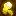 Feu follet (Wisp)Conjure a projectile of holy energy that will float towards nearby targets and deal damage upon impact. | Commun | 10 | 0.2 | 15+2/niv. | 1 s | 3.0 s |
École : Ender
| Sort | Rareté min. | Niv. max | Puiss. × | Mana | Incant. | Recharge |
|---|---|---|---|---|---|---|
| Trou noir (Black Hole) Around a targeted location, create a fissure into the void, manifesting a black hole that will suck in nearby creatures and slowly crush them to death | Légendaire | 6 | 0.2 | 300+100/niv. | 5 s | 120.0 s |
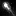 Contresort (Counterspell)Cast to interrupt any targeted magical process, such as a casting creature or a magical projectile. | Rare | 1 | 0.3 | 50+1/niv. | instant | 10.0 s |
| Souffle du dragon (Dragon's Breath) Hold to spew a cone of dragon breath forwards. Each time a creature is hit, there is a chance to create a pool of dragon breath at their feet. | Commun | 10 | 0.4 | 5+1/niv. | canalisé | 12.0 s |
| Frappes en écho (Echoing Strikes) (désactivé) While under the effects of the spell, non-magical attacks will leave an echo of ender energy behind, shortly thereafter exploding with an echo of the original attack's damage. | Rare | 5 | 1.0 | 50+10/niv. | instant | 60.0 s |
| Évasion (Evasion) Cast to imbue yourself with ender energy. Upon being attacked while under its effects, you will immediately teleport within a short radius and avoid taking any damage. Only a finite amount of hits can be dodged before the effect immediately wears off. | Épique | 5 | 0.1 | 40+20/niv. | instant | 180.0 s |
| Flèche magique (Magic Arrow) Hold to charge a piercing arrow made of arcane energy. This arrow has no gravity and can travel through blocks. | Rare | 10 | 0.4 | 40+5/niv. | 1,5 s | 8.0 s |
| Missile magique (Magic Missile) Shoot a bolt of concentrated arcane magic. Also a trademark of every wizard. | Commun | 10 | 0.9 | 10+2/niv. | instant | 1.0 s |
| Portail (Portal) Creates two portals that allows players to travel back and forth between them. | Peu commun | 3 | 0.009 | 200+10/niv. | instant | 180.0 s |
| Rappel (Recall) Warps you back to your spawn location, or world spawn if there is none. | Peu commun | 1 | 0.01 | 100+1/niv. | 5 s | 300.0 s |
| Chute d'étoiles (Starfall) Target a single area and continuously rain down arcane comets from above for the duration of the spell | Peu commun | 10 | 0.3 | 5+1/niv. | canalisé | 16.0 s |
| Invocation de coffre d'Ender (Summon Ender Chest) Apparate your Ender Chest inventory upon casting. | Rare | 1 | 0.2 | 25+1/niv. | instant | 5.0 s |
| Téléportation (Teleport) Instantaneously teleport to where you are looking, leaving nothing but a cloud of ender energy behind. | Peu commun | 5 | 0.008 | 20+2/niv. | instant | 3.0 s |
École : Sang
| Sort | Rareté min. | Niv. max | Puiss. × | Mana | Incant. | Recharge |
|---|---|---|---|---|---|---|
| Acupuncture Around a targeted creature, create a field of blood needles in every direction, shooting down and healing you for 25% of damage done | Rare | 10 | 0.2 | 25+5/niv. | instant | 20.0 s |
| Aiguilles de sang (Blood Needles) Create a ring of needles made from blood and fire them forward, skewering targets and healing you for 25% of damage done | Peu commun | 10 | 0.3 | 25+5/niv. | instant | 10.0 s |
| Entaille de sang (Blood Slash) Slash forward to send out a concentrated blade of blood, slicing through creatures and healing for 15% of damage done. | Rare | 5 | 0.3 | 25+5/niv. | instant | 10.0 s |
| Pas de sang (Blood Step) Instantaneously teleport to where you are looking, or directly behind any targeted creature. Gain a short duration of true invisibility upon reaching your destination. | Peu commun | 5 | 0.01 | 30+10/niv. | instant | 5.0 s |
| Dévorer (Devour) Pull in a nearby creature and attack them with a bite, leeching 15% of damage done as health. If the creature is killed, you temporarily gain additional max HP. Created by the ancient magician known as Yorhavich | Peu commun | 10 | 0.3 | 25+4/niv. | instant | 20.0 s |
| Arrêt cardiaque (Heartstop) Cast to inflict yourself with Heartstop, an effect that makes you temporarily invulnerable. However, once it wears off, you take 50% of all damage accumulated while under its effects. | Commun | 10 | 0.2 | 50+10/niv. | instant | 120.0 s |
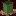 Relever les morts (Raise Dead)Cast to summon undead minions from the earth beneath you. The higher the power, the better equipment they will have. | Peu commun | 6 | 0.2 | 50+10/niv. | 1,5 s | 150.0 s |
| Rayon de siphonnage (Ray of Siphoning) Hold to cast a ray of necrotic energy that siphons health from creatures it hits, damaging them and healing you for 100% of damage done. | Commun | 10 | 0.3 | 8+1/niv. | canalisé | 15.0 s |
| Sacrifice Target one of your magic summons to cause them to explode, killing them instantly, and dealing large damage in the area around them. The summon's remaining health boosts the damage dealt and radius of explosion. | Rare | 10 | 0.2 | 25+5/niv. | instant | 20.0 s |
| Crâne de Wither (Wither Skull) Launch a wither skull forward that explodes in a small radius around the impact. The higher the level, the faster the projectile. | Peu commun | 10 | 0.3 | 20+2/niv. | instant | 1.0 s |
École : Évocation
| Sort | Rareté min. | Niv. max | Puiss. × | Mana | Incant. | Recharge |
|---|---|---|---|---|---|---|
| Volée de flèches (Arrow Volley) Around a targeted creature or block, summon a rolling wave of magical arrows from the sky. | Peu commun | 6 | 0.3 | 40+10/niv. | 1,5 s | 15.0 s |
| Creeper en chaîne (Chain Creeper) Around a targeted creature or block, conjure a ring of creeper heads that falls to the ground and explodes. Any creature killed by this blast will conjure another, smaller, ring of creeper heads. This can chain multiple times. | Peu commun | 6 | 0.3 | 40+10/niv. | 1,5 s | 15.0 s |
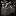 Frappe de crocs (Fang Strike)Conjure a line of evoker fangs in front of you, in classic illager fashion. | Commun | 10 | 0.3 | 30+3/niv. | 0,8 s | 5.0 s |
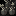 Garde de crocs (Fang Ward)Conjure protective rings of evoker fangs around you, in classic illager fashion. | Commun | 8 | 0.3 | 45+5/niv. | 0,8 s | 15.0 s |
| Pétard (Firecracker) (désactivé) Instantaneously conjure a firework where you look that explodes in a small radius around it. | Commun | 10 | 0.3 | 20+2/niv. | instant | 1.5 s |
| Bourrasque (Gust) Conjure a strong gust of wind, knocking back creatures in a conical shape, causing damage if they impact a wall | Peu commun | 10 | 0.3 | 30+5/niv. | 0,8 s | 12.0 s |
| Invisibilité (Invisibility) Cast to briefly grant yourself true invisibility, which hides armor and held items, but immediately wears off upon dealing damage. Mobs also lose aggro. | Rare | 6 | 0.2 | 35+8/niv. | 2 s | 45.0 s |
| Creeper lancé (Lob Creeper) Lob the head of a creeper forward that explodes in a medium radius around the impact. The higher the level, the faster the projectile. | Peu commun | 10 | 0.4 | 20+2/niv. | instant | 2.0 s |
| Bouclier (Shield) Conjure a stationary shield of arcane energy where you look that will block projectiles and prevent creatures from passing. | Commun | 10 | 0.2 | 35+5/niv. | instant | 8.0 s |
| Ralentissement (Slow) In a radius around a targeted creature, apply the Slowed effect to enemies, decreasing movement speed, attack speed, mining speed, mana regeneration, and cast time for a duration. | Peu commun | 6 | 0.2 | 50+10/niv. | 1,5 s | 45.0 s |
| Marteau spectral (Spectral Hammer) Conjure a spectral hammer out from where you look that will mine all connected stone-type blocks in a cube where it hits, leaving only ores and rubble behind. | Peu commun | 5 | 0.3 | 15+5/niv. | instant | 10.0 s |
| Invocation de cheval (Summon Horse) Conjure a spectral steed that will follow you around and only let you ride. The horse's speed, health, and jump height scales with spell power. | Commun | 5 | 0.2 | 50+2/niv. | 1 s | 20.0 s |
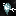 Invocation de vex (Summon Vex)Cast to conjure vexes that will follow, protect, and fight for you. | Rare | 5 | 0.3 | 50+10/niv. | 1 s | 150.0 s |
| Wololo Wololo! | Légendaire | 1 | 1.0 | 10+5/niv. | 1,5 s | 10.0 s |
École : Nature
| Sort | Rareté min. | Niv. max | Puiss. × | Mana | Incant. | Recharge |
|---|---|---|---|---|---|---|
| Jet d'acide (Acid Spit) Spit an orb of acid, splashing in a radius upon impact and rending creatures hit, melting away and reducing their armor | Commun | 10 | 0.4 | 30+3/niv. | 0,8 s | 15.0 s |
| Aspect de l'araignée (Aspect of the Spider) Instill yourself with poisonous magic, dealing additional melee, ranged, or spell damage creatures that are poisoned | Rare | 8 | 0.5 | 35+5/niv. | instant | 90.0 s |
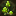 Flétrissure (Blight)Target a creature to blight them, reducing their incoming healing and outgoing damage | Rare | 8 | 0.3 | 10+5/niv. | 2,5 s | 35.0 s |
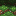 Séisme (Earthquake)Conjure an earthquake around a targeted creature or location, causing tremors to ripple through the ground, damaging and slowing creatures in the area. | Peu commun | 10 | 0.2 | 50+10/niv. | 2 s | 16.0 s |
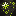 Essaim de lucioles (Firefly Swarm)Emanate a swarm of violent fireflies, following a targeted creature and dealing aoe damage. If the initial target dies, the last harmed creature will be targeted. | Peu commun | 10 | 0.3 | 40+10/niv. | 1,5 s | 20.0 s |
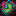 Gloutonnerie (Gluttony)Turn your stomach into an arcane furnace, turning eaten food into mana for a duration. | Commun | 5 | 1.0 | 35+0/niv. | instant | 90.0 s |
| Peau de chêne (Oakskin) The great power of oak infuses itself into your skin, granting damage reduction of any incoming damage for a duration. | Commun | 8 | 0.5 | 15+5/niv. | instant | 35.0 s |
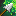 Flèche empoisonnée (Poison Arrow)Charge a powerful arrow, imbued with poison magic, that will release a poisonous cloud upon impact | Commun | 10 | 0.3 | 40+5/niv. | 1 s | 15.0 s |
| Éclaboussure de poison (Poison Splash) Around a targeted creature or block, conjure a wave of poisonous magic that splashes down, damaging creatures hit and leaving behind a poisonous cloud | Peu commun | 10 | 0.3 | 40+10/niv. | 0,8 s | 20.0 s |
| Souffle empoisonné (Poison Spray) Spew forth a cone of poison, damaging and poisoning creatures in its reach | Commun | 10 | 0.3 | 5+1/niv. | canalisé | 12.0 s |
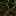 Racines (Root) (désactivé)Around a targeted creature, sprout magical roots than entangle them and completely prevent non-magical movement | Peu commun | 10 | 1.0 | 45+3/niv. | 2 s | 35.0 s |
| Piétinement (Stomp) With a magic force, stomp the ground in front of you and send a short tremor forward through the ground, damaging creatures in its path. | Peu commun | 5 | 1.0 | 50+10/niv. | 0,5 s | 16.0 s |